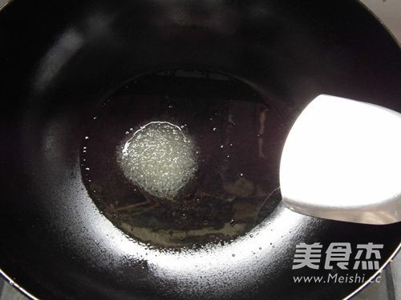
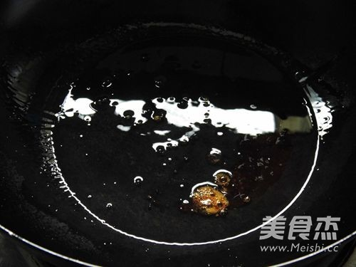
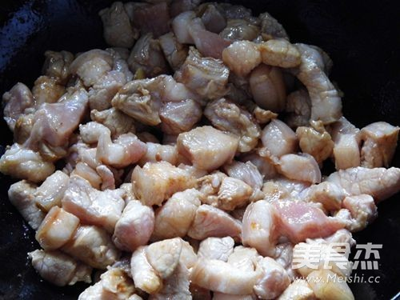
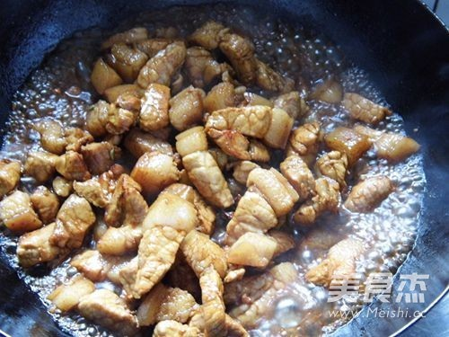
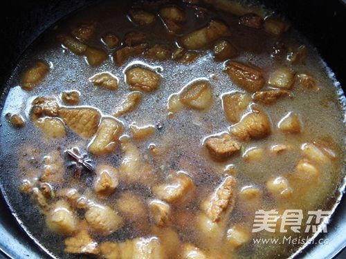
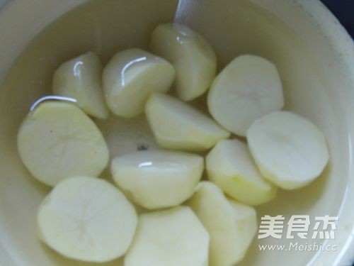
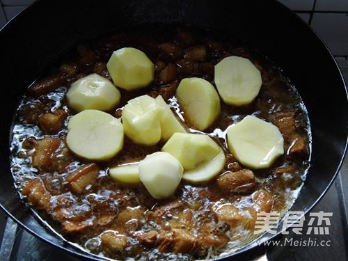
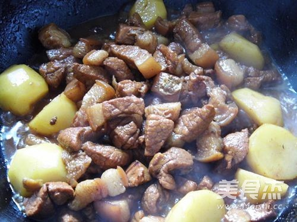

“土豆是低热能、多维生素和微量元素的食物，是理想的减肥食品。每100克土豆含钾高达300毫克。专家认为，每周吃5～6个土豆可使中风几率下降40%。土豆中含有丰富的膳食纤维，有助促进胃肠蠕动 ，疏通肠道。因此土豆对辅助治疗消化不良、习惯性便秘、神疲乏力、慢性胃痛、关节疼痛、皮肤湿疹等症有良好效果，是胃病和心脏病患者的优质保健食品。土豆还可以降糖降脂，美容、抗衰老等。 猪肉含有丰富的优质蛋白质和必需的脂肪酸，并提供血红素（有机铁）和促进铁吸收的半胱氨酸，能改善缺铁性贫血；具有补肾养血，滋阴润燥的功效；但由于猪肉中胆固醇含量偏高，故肥胖人群及血脂较高者不宜多食。
”
红烧肉的宜忌人群：
1、一般健康人和患有疾病之人均能食之,但食之过多,便使人摄入了过多热量,多余的热量转化为脂肪在人体内储存,就致人肥胖,肥胖则易发多种疾病;多食或冷食易引起胃肠饱胀或腹胀腹泻;对于脂肪及猪油,患高血压或偏瘫(中风)病者及肠胃虚寒、虚肥身体、痰湿盛、宿食不化者应慎食或少食之。
2、适宜阴虚不足、头晕、贫血、老人燥咳无痰、大便干结,以及营养不良者食用;
3、对湿热偏重、痰湿偏盛、舌苔厚腻之人,忌食猪肉。
炒锅内倒点油滑一下锅，放入1大勺白糖

炒至白糖融化成焦糖色。

五花肉入锅中翻炒，至五花肉上色

在放入葱、姜、大料、桂皮、三奈炒出香味。

加入老抽、料酒、加入适量的清水，加盖子小火焖烧30分钟。

土豆削切块用清水泡着。

放入土豆，调入盐。

炖至土豆软糯，大火收汁。
